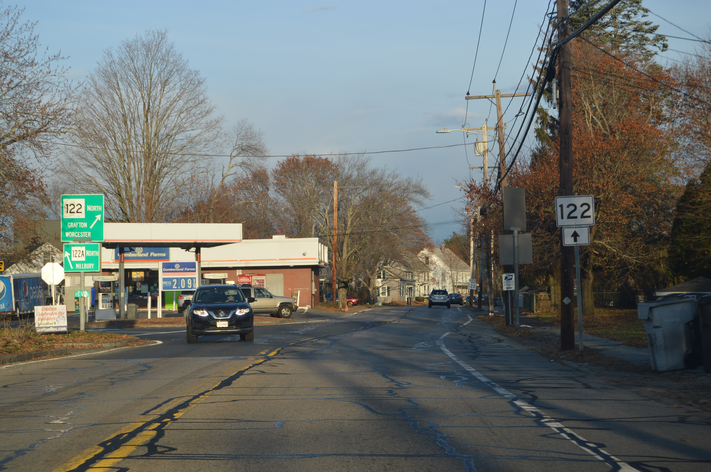
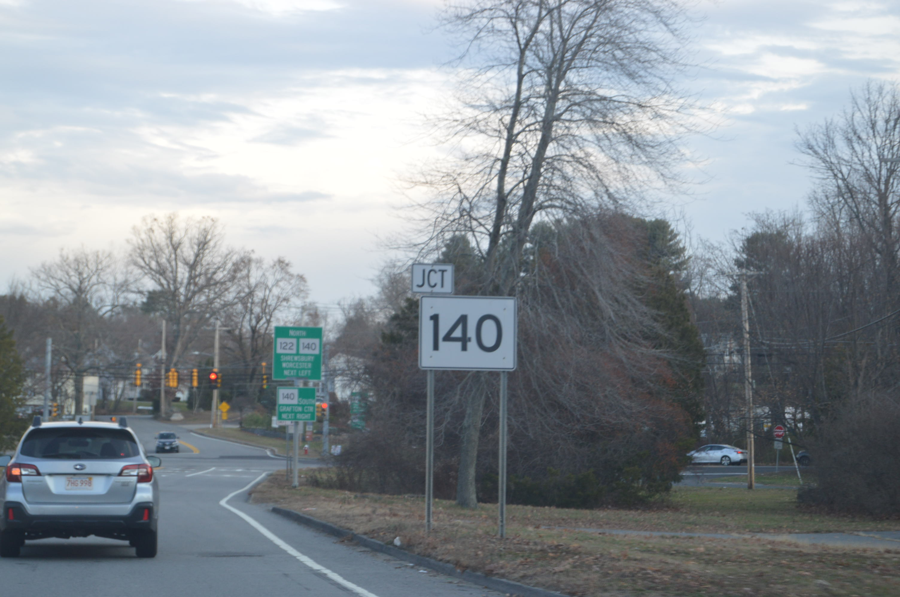
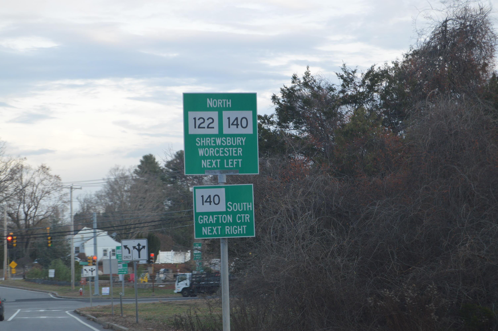
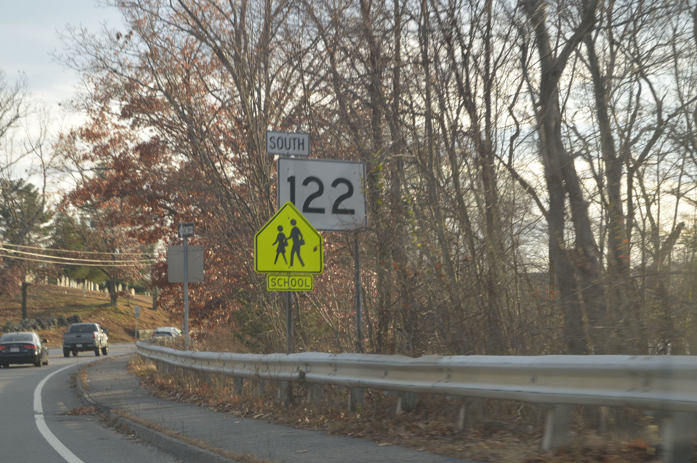
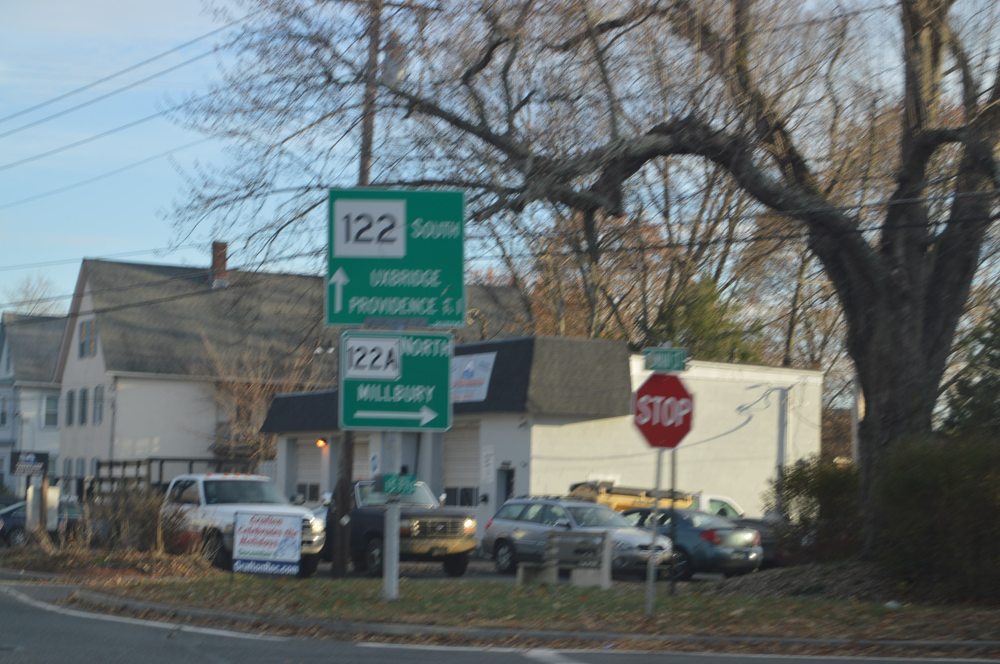
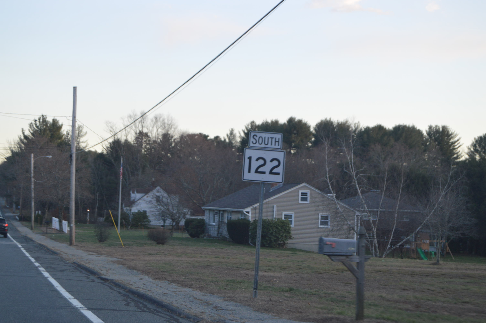

A reassurance shield in Northbridge.
At the junction with MA 122A in Grafton.
 At the southern end of the 122 / 140 concurrency in Grafton. Large shield for MA 140.

A combo shield assembly for both 122 and 140 in Grafton.

Odd font for the paddle sign before the southern end of the 122 / 140 concurrency.

Arrows pointing in the direction each route splits off in. MA 122 is correct, and goes to the right. However, MA 140 continues straight along Worcester Street into Grafton center. There is another road accessed by a left turn at the light ahead.
A large shield just after departing from the concurrency.
Not one of my best photos, located at the MA 122A junction in Grafton.
A reassurance shield in Grafton as the road approaches the Northbridge line.